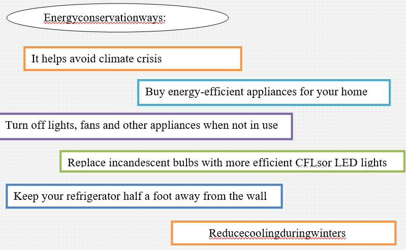
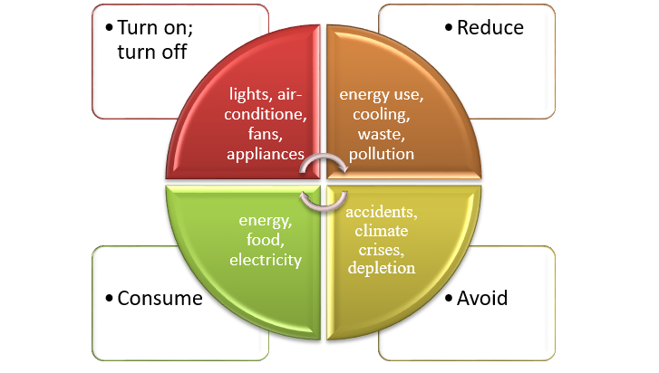
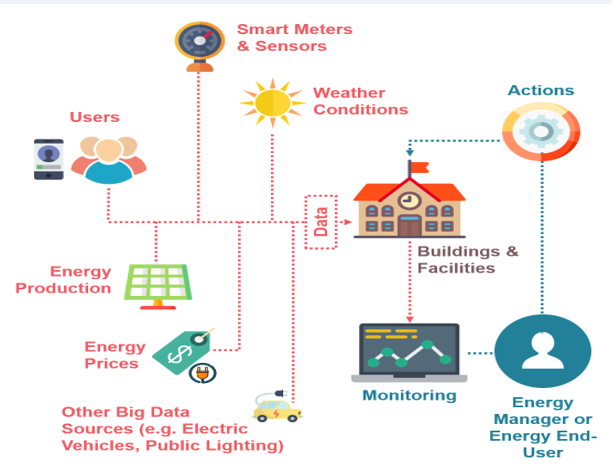
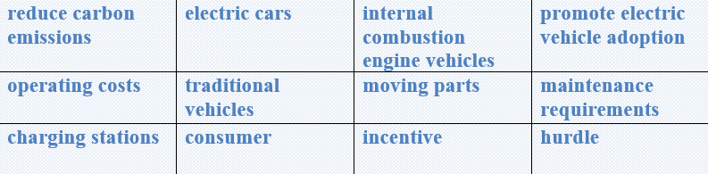

Why is energy conservation important?
Energy conservation means using energy only when it is required, and not wasting any amount of it.
Saving energy helps to reduce pollution
It helps to avoid depletion of limited natural resources. It helps replacement of non-renewable sources with renewable energy.

There are also some other ways of saving energy at home that can be really helpful for consumers. For example, keeping the geyser on consumes a lot of electricity. Switch it off immediately after taking bath.Ensure all doors and windows are closed when your air conditioner is turned on.
Task 1 Vocabulary
Learn the new word phrases and make sentences using them all.

Task2 Learn the given process of energy management and write about the process.

Task3 Listening
Listen and circle the numbers you hear.
1 It costs $13 / $30.
2 There are sixteen / sixty students on the course.
3 My house is number 17 / 70.
4 This dessert is 14% / 40% fat.
5 You need to take bus number 19 / 90 for the airport.
6 My camera was only £115 / £150 in the sale.
7 Our website had 16,450 / 16,550 visitors lastmonth.
8 My grandmother was born in 1938 / 1948.
9 The company employs about 20,000 / 30,000people.
10 I went to university in 2004 / 2014 to study history.
Task 4 Writing
✔️ Learn the given lexical units.
✔️ Work in groups and explain the meanings of the given lexical units.
✔️ Try to use them in sentences.

Read the case and give some solutions
Growing awareness of climate change and the desire to reduce carbon emissions has led consumers to consider electric cars as a cleaner and more sustainable alternative to traditional internal combustion engine vehicles.
Many governments worldwide offer incentives to promote electric vehicle adoption. Electric cars generally have lower operating costs than traditional vehicles due to fewer moving parts, lower maintenance requirements, and the overall efficiency of electric drive trains. This cost savings can be an attractive factor for consumers.
However, the availability and accessibility of charging stations remain a significant hurdle. Another challenge with the e-cars is the financial one.
While the overall cost of EVs has been decreasing, they can still be more expensive upfront compared to traditional vehicles.
Suggest some efficient ways of digital transformation and applying AI-powered technologies.